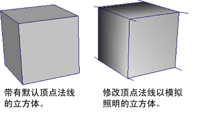

- 位于“建模”(Modeling)菜单集中。
法线(Normals)
- 平均(Average)
- 平均化顶点法线的方向。这将影响已进行着色的多边形的外观。
选择“网格显示 > 平均”(Mesh Display > Average) >
 可设置平均化法线选项。
可设置平均化法线选项。
- 一致(Conform)
- 统一选定多边形网格的曲面法线方向。生成的曲面法线方向将基于网格中共享的大多数面的方向。请参见编辑顶点法线以影响多边形着色。
- 反向(Reverse)
- 反转选定多边形上的法线。也可以指定是否反转用户定义的法线。
选择“网格显示 > 反转”(Mesh Display > Reverse) >
可设置反转法线选项。
- 设置为面(Set to Face)
-
允许您将顶点法线设置为与面法线相同的方向。
选择“网格显示 > 设置为面”(Mesh Display > Set to Face) >
可设置设置为面法线选项。
- 设置顶点法线(Set Vertex Normal)
- 控制顶点法线的位置。这将影响已进行着色的多边形的外观。默认情况下，Maya 会将法线锁定为其现有值。
选择“网格显示 > 设置顶点法线”(Mesh Display > Set Vertex Normal) >
可设置设置顶点法线选项。
- 硬化边(Harden Edge)
-
操纵顶点法线，以更改使用硬化外观渲染的着色多边形外观。“硬化边”(Harden Edge)将“法线角度”(Normal angle)设置为 0 度，使所有选定边硬渲染。有关硬化边的详细信息，请参见使用顶点法线硬化或软化多边形着色。
注： 用户定义（锁定）的法线仅在如何共享顶点处未受到柔化或硬化。应该使用“平均化法线”(Average Normals)或“设置为面”(Set to Face)功能来设置该值。 - 软化边(Soften Edge)
-
控制顶点法线，以更改外观的渲染多边形以渲染过程中柔化的外观。“软化边”(Soften Edge)将“法线角度”(Normal angle)设置为 180 度，使所有选定边渲染柔和。有关软化边的详细信息，请参见使用顶点法线硬化或软化多边形着色。
注： 用户定义（锁定）的法线仅在如何共享顶点处未受到柔化或硬化。应该使用“平均化法线”(Average Normals)或“设置为面”(Set to Face)功能来设置该值。 - 软化/硬化边(Soften/Harden Edge)
- 允许您通过指定法线的角度值来操纵多边形的着色外观。有关详细信息，请参见使用顶点法线硬化或软化多边形着色。
- 方法(Method)
- 确定如何软化/硬化边。选项包括：
- 角度(Angle)：硬化任何大于当前值的角度。所有其他角度均渲染为软角度。
- 纹理边界(Texture Borders)：沿纹理边界硬化所有边。所有其他边均渲染为软边。
- 锁定法线(Lock Normals)
-
锁定顶点法线。
法线对着色的多边形的外观有直接影响。
对于与顶点或顶点/面组件相关联的每个法线，您指定的法线值（或者使用的默认值）是固定的。这意味着如果更改顶点位置，法线不会更改位置。
- 解除锁定法线(Unlock Normals)
- 解除锁定顶点法线。
法线对着色的多边形的外观有直接影响。解锁先前锁定的顶点法线时，Maya 会根据面的默认法线计算自动重新计算其顶点法线。
- 顶点法线编辑工具(Vertex Normal Edit Tool)
-
通过该工具，您可以使用操纵器调整用户定义的顶点（或几个选定的顶点）法线。例如，您可以通过修改顶点法线的方向使锐利的边缘看起来更平滑或调整多边形对象上的照明。
使用该工具编辑顶点法线将覆盖现有的 Maya 网格法线并锁定您设定的用户定义的法线。可以使用“网格显示 > 解除锁定法线”(Mesh Display > Unlock Normals)解除锁定用户定义的法线。
注： 编辑具有面/顶点分量的法线可导致出现新的硬边，任何已解除锁定的相邻法线都可能会在该过程中移动。锁定希望保持不受影响的任何相邻的法线，然后再进行编辑。选择“网格显示 > 顶点法线编辑工具”(Mesh Display > Vertex Normal Edit Tool) >
可设置顶点法线编辑工具选项。
顶点颜色(Vertex Colors)
- 应用颜色(Apply Color)
- 添加或移除多边形网格的选定顶点上的逐顶点颜色 (CPV)。
选择“网格显示 > 应用颜色”(Mesh Display > Apply Color) >
可设置“应用颜色选项”(Apply Color Options)。
- 绘制顶点颜色工具(Paint Vertex Color Tool)
- 可用于通过使用鼠标或带手写笔的绘图板直接在网格上绘制，在多边形网格上应用逐顶点颜色信息。
选择“网格显示 > 绘制顶点颜色工具”(Mesh Display > Paint Vertex Color Tool) >
可设置绘制顶点工具选项。
顶点颜色集(Vertex Color Sets)
- 创建空集(Create Empty Set)
- 为逐顶点颜色作品创建空颜色集。有关详细信息，请参见创建和编辑颜色集。
选择“网格显示 > 创建空集”(Mesh Display > Create Empty Set) >
可设置创建空颜色集选项(Create Empty Color Set Options)。
- 删除当前集(Delete Current Set)
- 移除指定的现有颜色集。有关详细信息，请参见创建和编辑颜色集。
- 重命名当前集(Rename Current Set)
- 重命名现有颜色集。有关详细信息，请参见创建和编辑颜色集。
- 修改当前集(Modify Current Set)
- 从选定颜色集中指定一个 polyColorMod 节点下游，以便将全局颜色修改应用于 HSV 颜色空间或 RGBA 颜色通道基础的颜色集。适用于此目的的选项也存在于颜色集编辑器中。有关详细信息，请参见颜色集编辑器(Color Set Editor)。
- 为顶点颜色设置关键帧(Set Keyframe for Vertex Color)
- 使用该选项可以为逐顶点颜色属性设置动画关键帧。
- 颜色集编辑器(Color Set Editor)
- 允许您管理任何纹理的颜色集和已完成的预照明工作。
选择“网格显示 > 颜色集编辑器”(Mesh Display > Color Set Editor) >
可设置颜色集编辑器选项。
顶点烘焙集(Vertex Bake Sets)
- 预照明(Maya)(Prelight (Maya))
-
“预照明”(Prelight)功能计算来自多边形网格的渲染外观的着色和照明颜色信息并将其直接存储在网格的逐顶点颜色信息上。这也称为“烘焙”照明。它还可以将生成的预照明信息作为纹理贴图导出。
选择“网格显示 > 预照明(Maya)”(Mesh Display > Prelight (Maya)) >
可设置预照明选项。
- 指定新集(Assign New Set)
-
创建新的顶点烘焙集，然后将选定的对象指定给它，以便您可以创建光照贴图。
- 指定现有集(Assign Existing Set)
-
将选定的对象指定给现有烘焙集。现有烘焙集的列表将显示在下拉列表中以供选择。
- 编辑指定的集(Edit Assigned Set)
-
显示“属性编辑器”(Attribute Editor)的同时显示当前指定的烘焙集选项卡，以便您可以编辑任何烘焙集属性。
显示属性
- 切换显示颜色属性(Toggle Display Colors Attribute)
-
“切换显示颜色属性”(Toggle Display Colors Attribute)将为当前选定的多边形网格启用或禁用“显示颜色”(Display Colors)属性（位于形状节点的“网格组件显示”(Mesh Component Display)选项卡）。
当显示被设定为着色模式时，启用“显示颜色”(Display Colors)属性允许您查看逐顶点颜色信息，以及多边形网格上的任何指定着色器。任何对象的“显示颜色”(Display colors)设置默认为禁用，直到应用逐顶点颜色信息。
如果不希望在着色模式下查看时，查看场景中的任何新多边形对象的逐顶点颜色信息，请禁用“切换显示颜色属性”(Toggle Display Colors Attribute)。
- 对材质通道上色(Color Material Channel)
-
“对材质通道上色”(Color Material Channel)选项确定现有材质通道和所指定的顶点颜色之间的交互。对于“无”以外的所有选项，照明会影响对象的着色。
选择“网格显示 > 对材质通道上色”(Mesh Display > Color Material Channel)以选择对材质通道上色选项之一。
- 材质融合设置(Material Blend Setting)
-
指定“对材质通道上色”(Color Material Channel)如何将逐顶点颜色 (CPV) 值与指定的着色材质相融合。
选择“网格显示 > 材质融合设置”(Mesh Display > Material Blend Setting)以选择材质融合设置选项之一。
- 逐实例共享(Per Instance Sharing)
- 选择共享实例(Select shared instances)
- 亮显场景中与选定实例共享颜色集系列的所有实例。
- 共享实例(Share Instances)
- 可用于将一个实例的颜色集与其他实例共享。选择具有要共享的颜色集的实例，然后选择其他实例。